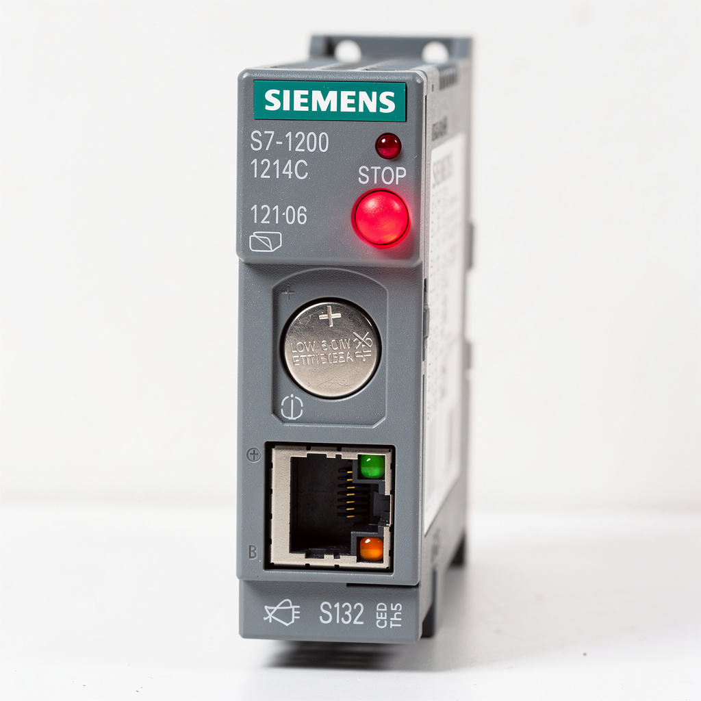
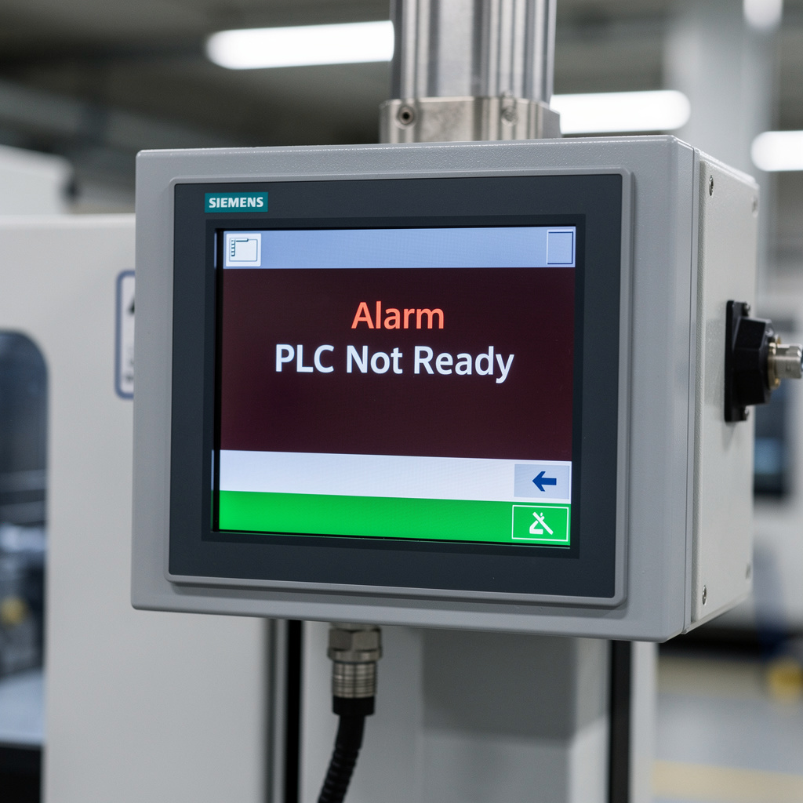

Panne S7-1200 — Batterie RTC faible + perte données recettes
// Le Problème
Contexte : Cellule robotisée assemblage connecteurs 16 broches. Production 220 pièces/heure, pilotée par automate Siemens S7-1200 CPU 1214C DC/DC/DC + KTP700 Basic HMI.
Symptôme : Arrêt total cellule au démarrage matinal. LED CPU STOP rouge clignotant. HMI affiche 'PLC Not Ready'. Aucune commande I/O ne répond. Production bloquée, 3 opérateurs sans poste.
// Diagnostic
Étape 1 — CPU S7-1200 : alimentation 24 V OK (23,9 V). LED STOP fixe + MAINT jaune clignotant. LED SF éteinte (pas d'erreur hardware). Diagnostic TIA Portal via Ethernet : CPU en STOP, pas de défaut système visible.
Étape 2 — Analyse programme : bloc d'organisation OB1 en erreur. Détail : accès DB10 (recettes paramètres serrage pince) avec index hors plage. DB10 vide — 0 octet. Le programme tente de lire l'enregistrement recette N°5 (index 4) dans une DB vide → erreur d'accès → OB1 plante → CPU passe STOP.
Étape 3 — Historique : vérification horloge CPU : date affichée 01.01.2012 00:00:00 (valeur usine par défaut). La date/heure réelle a été perdue. La DB10 est une retain variable (stockée en RAM + sauvegardée par batterie RTC). La batterie interne CR1025 est à 2,1 V (nominale 3,0 V, seuil critique 2,5 V). Perte de la batterie = perte des données retentives + horodatage au redémarrage après coupure secteur (maintenance nocturne sur alim 24 V commune).
Étape 4 — Cause racine : coupure 24 V secteur pour maintenance voisinage la nuit précédente (2 h). Au redémarrage matinal, batterie RTC épuisée n'a pas maintenu les données retentives. La DB recettes a été initialisée vide (0 octet) au lieu de contenir les 12 enregistrements de paramètres de serrage. Le programme au démarrage lit l'enregistrement actif → index hors plage → plantage OB1 → STOP.



// Solution apportée
// Résultat mesuré
Cellule redémarrée après 1 h 30 d'arrêt (vs 4–6 h pour diagnostic constructeur + reprogrammation). Zéro rebut depuis redémarrage. Production 220 pièces/heure rétablie. Coût intervention : pile CR1025 2 € + 1 h 30 main d'œuvre. Économie vs appel constructeur Siemens : ~1 800 € (déplacement Tanger-Casablanca + diagnostic + reprogrammation).